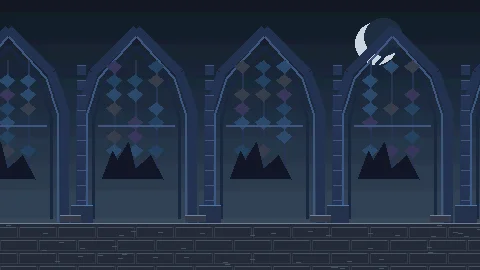
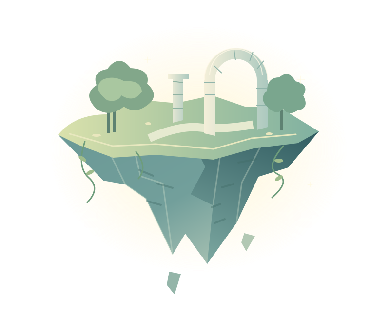
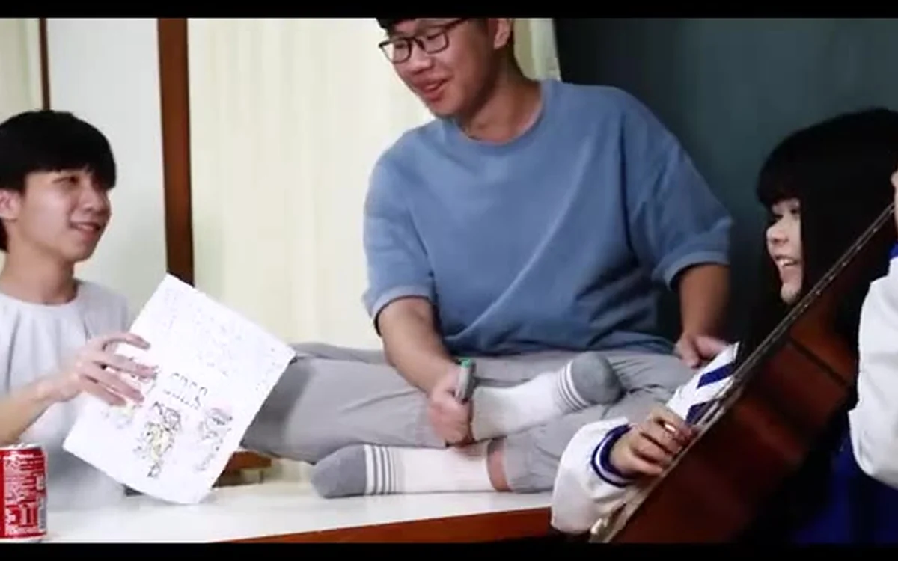
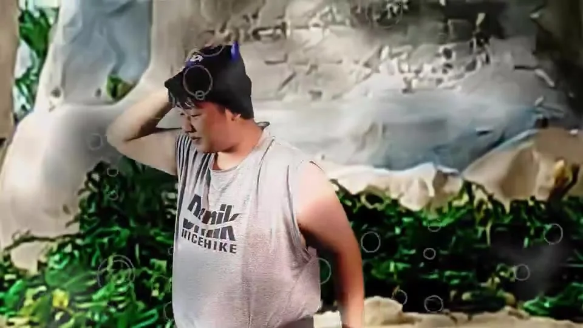
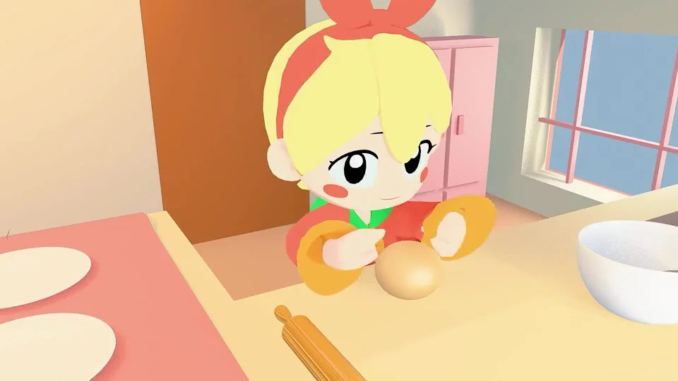
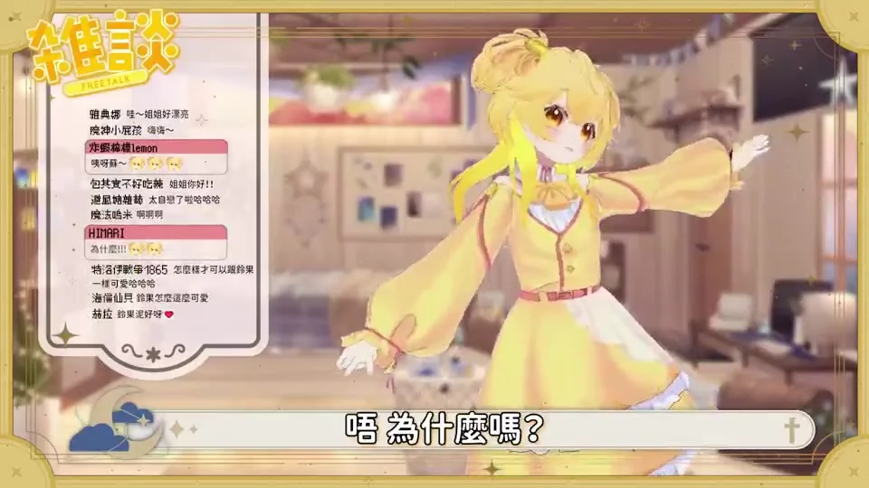
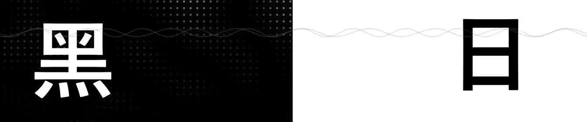
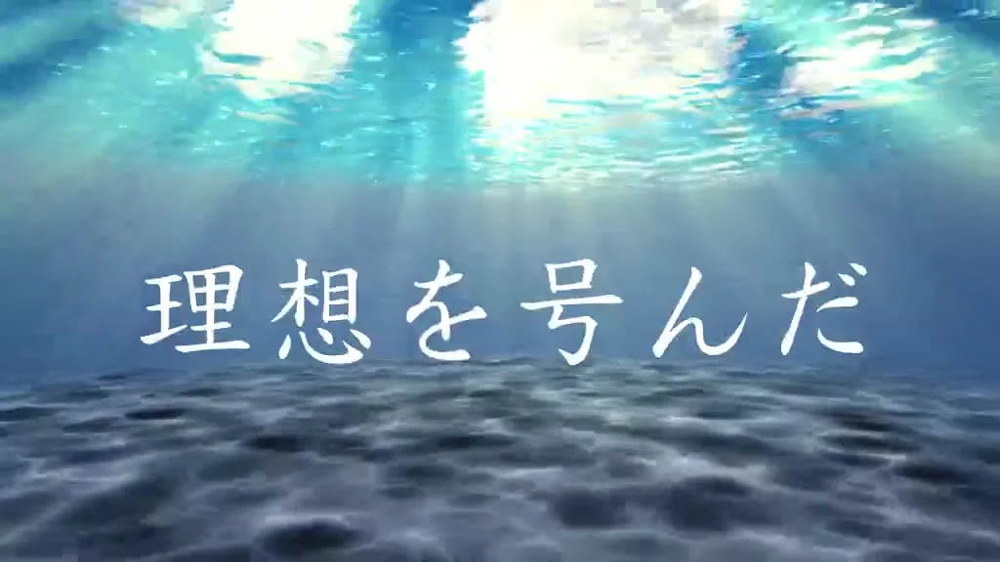
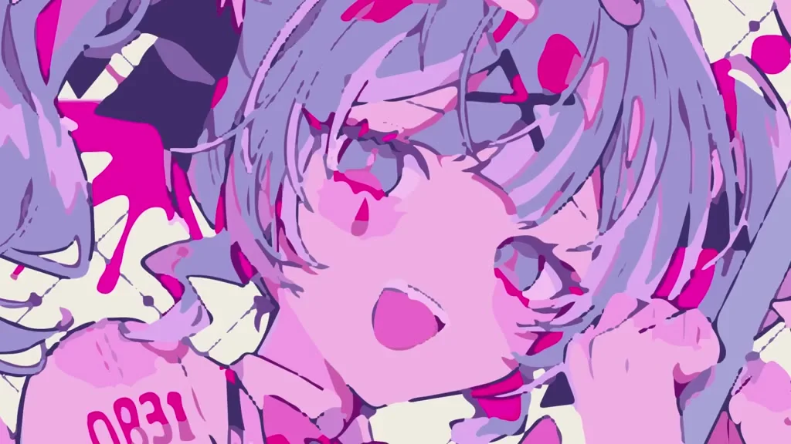

FORGOTTEN BLADE遺忘之刃殘響之詩
遺忘之刃
像素動作遊戲，透過 Boss 戰與記憶片段探索失憶騎士的過去。
試玩遊戲（另開分頁）
像素動作遊戲，透過 Boss 戰與記憶片段探索失憶騎士的過去。
試玩遊戲（另開分頁）
參與 115 級畢製形象組，負責網站、主視覺動畫及展場視覺等工作。
瀏覽畢製網站（另開分頁）
7:30為他人製作的網站。示範頁的個人簡介與插畫屬於委託方。
查看網站示範
1:52
2:36
1:27
0:30
0:09
0:18ABOUT
我就讀台南應用科技大學多媒體動畫系，作品包含影視、後製合成、網頁設計與遊戲原型。
在《浮島之間》畢製形象組，我參與主視覺動畫、網站、Discord 機器人和展場視覺。